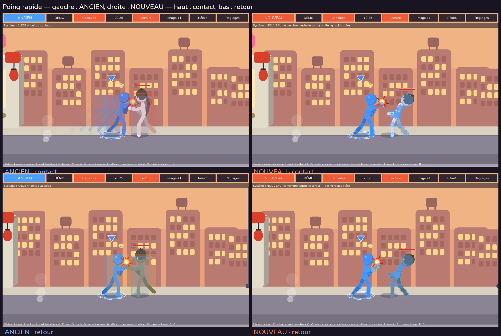
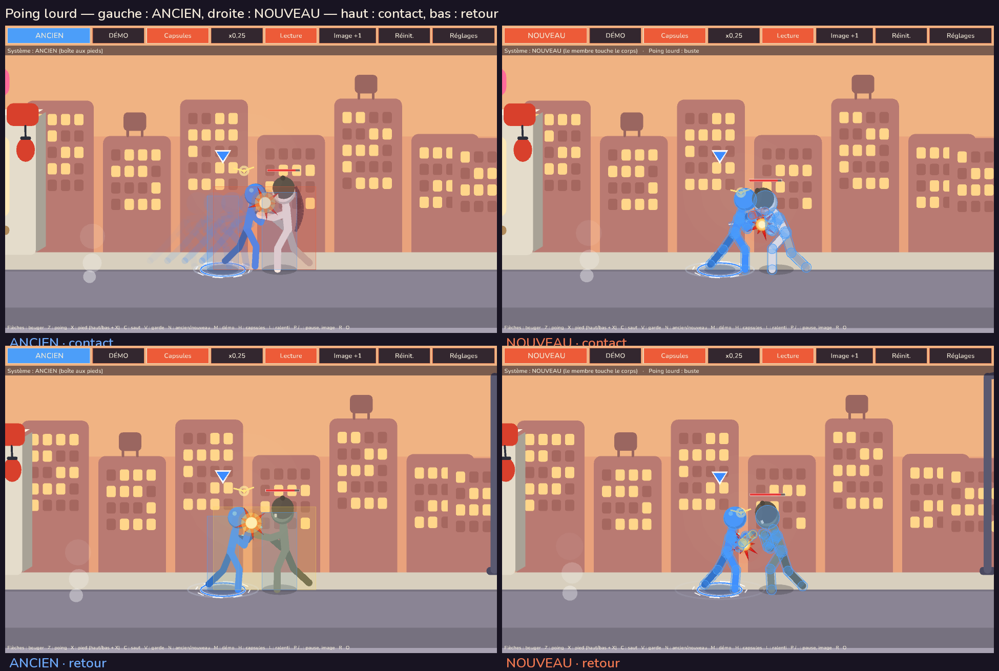
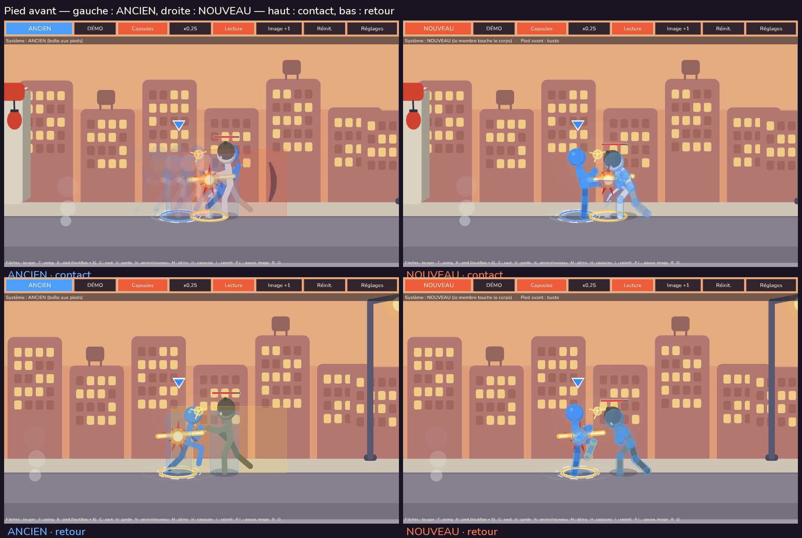
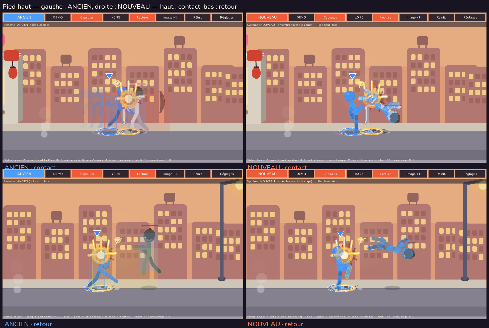
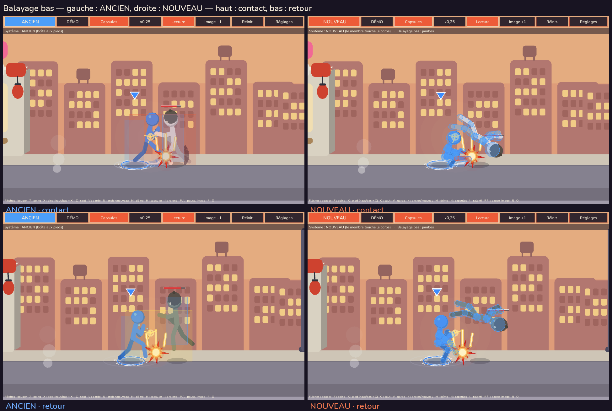
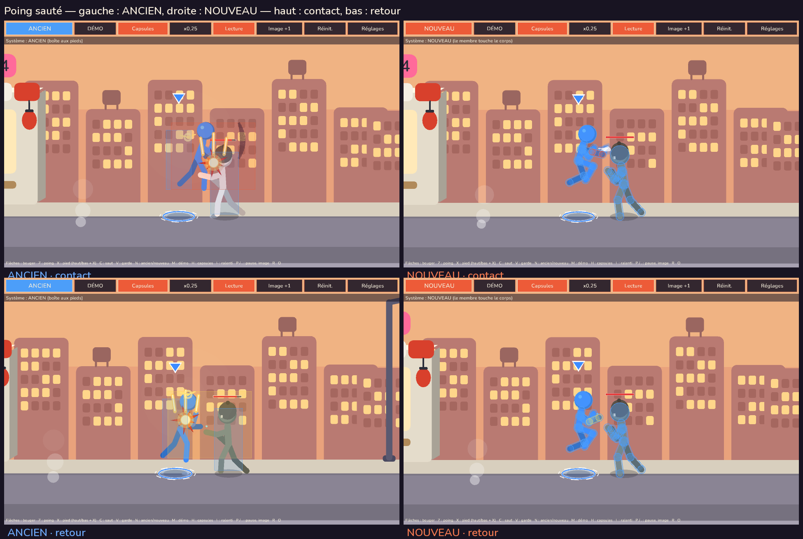
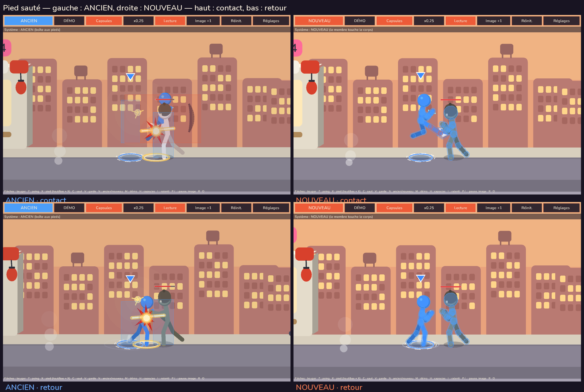
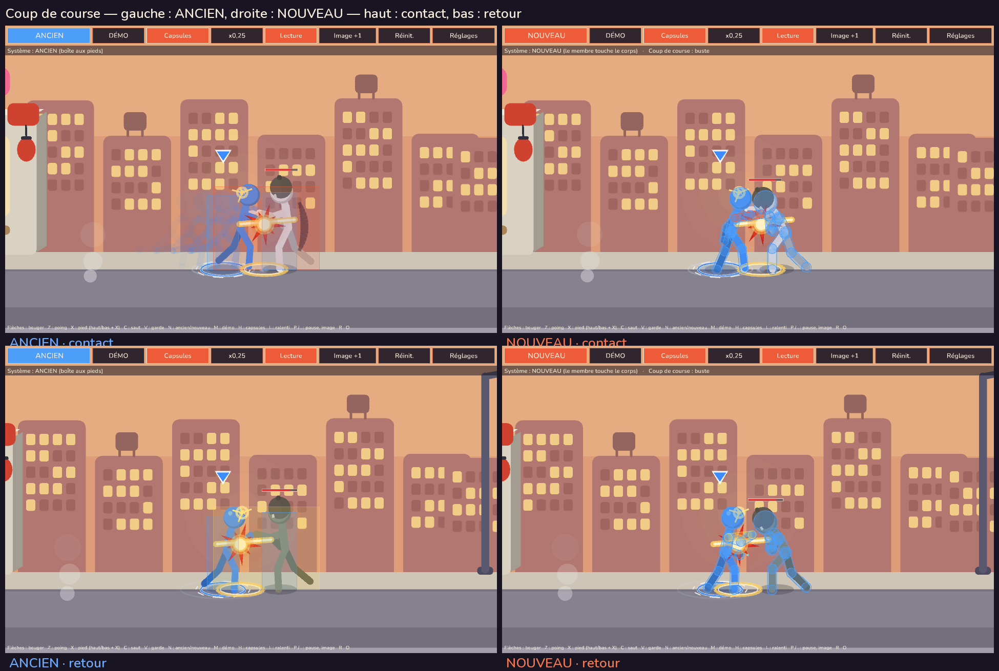

Coups v2 : le membre qui touche est le membre dessiné
Prototype sur Kaze (et un Voyou) : un coup = des poses clés du squelette ; ce qui touche = le membre lui-même ; ce qui est touchable = le corps lui-même. Le labo jouable s'ouvre avec ?labo=coups.
Mesure (coups v2 de Kaze, même définition que le test actuel)
(a) le membre dessiné traverse le corps sans toucher ; (b) la touche a lieu alors que le membre est loin du corps (plus de 0,1 taille).
| Scène | (a) ancien | (a) nouveau | (b) ancien | (b) nouveau |
|---|---|---|---|---|
| Sol contre sol | 6 | 0 | 0 | 7 |
| Sol contre cible en l'air | 0 | 0 | 76 | 3 |
| Sol contre cible projetée | 18 | 0 | 173 | 0 |
| Sauté contre sol | 13 | 0 | 4 | 4 |
| Sauté contre sauté | 12 | 0 | 0 | 0 |
| Sauté contre projetée | 0 | 0 | 104 | 8 |
| Total | 49 | 0 | 357 | 22 |
| Corps à terre (intouchable, voulu) | 38 | 28 | 0 | 0 |
| Décalage en profondeur 12 / 24 / 36 | 9 / 68 / 79 | 0 / 55 / 62 | 0 / 0 / 0 | 7 / 0 / 0 |
Les (b) restants du nouveau système : l'avant-bras ou le tibia touche alors que le bout (poing, pied) est déjà passé, ce n'est pas une touche « dans le vide ». La profondeur reste le point faible des deux systèmes : à l'écran, 24 unités de profondeur ne décalent la cible que de 5 unités.
Planches (gauche ancien, droite nouveau ; haut contact, bas retour ; capsules visibles)







